I. Fuzzy Logic
Classic Sets vs. Fuzzy Sets
Classic Sets (Ensembles classiques): In traditional logic, an item completely belongs to a group (a value of 1) or it doesn't belong at all (a value of 0).
Fuzzy Sets (Ensembles flous): Fuzzy logic allows for partial belonging. An item's membership can be any value in the interval [0, 1].
Basic Characteristics of Fuzzy Sets
- Support (Le support): Every item that belongs to the set even a tiny bit ($\mu_A(x) > 0$).
$$ \text{supp}(A) = \{x \in X, \mu_A(x) > 0\} $$
- Kernel (Le noyau): Only the items that perfectly and completely belong to the set ($\mu_A(x) = 1$).
$$ \text{Noyau}(A) = \{x \in X, \mu_A(x) = 1\} $$
- Height (La hauteur): The highest possible membership score that any item achieves in the whole set.
$$ H(A) = \sup_{x \in X} \mu_A(x) $$
- Alpha-cut ($\alpha$-Coupe): A filter that keeps items with a membership score above a specific threshold ($\alpha$).
$$ A_\alpha = \{x \in X, \mu_A(x) \geq \alpha\} $$
- Crossover point (Point de croisement): The exact point where an item is right in the middle, with a score of exactly 0.5.
- Normalized fuzzy sets (Ensembles flous normalisés): A set is considered "normalized" if at least one item in it reaches a perfect score of 1.
$$ A \text{ est normalisé } \iff \exists x \in X, \mu_A(x) = 1 $$
- A fuzzy set is convex if and only if its $\alpha$-cuts are convex.
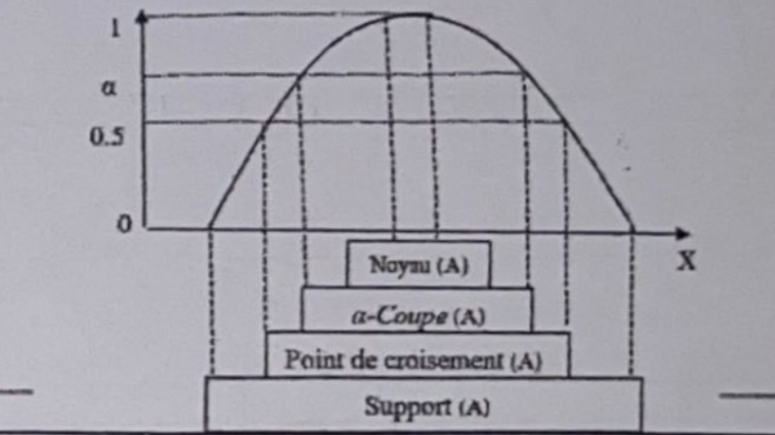
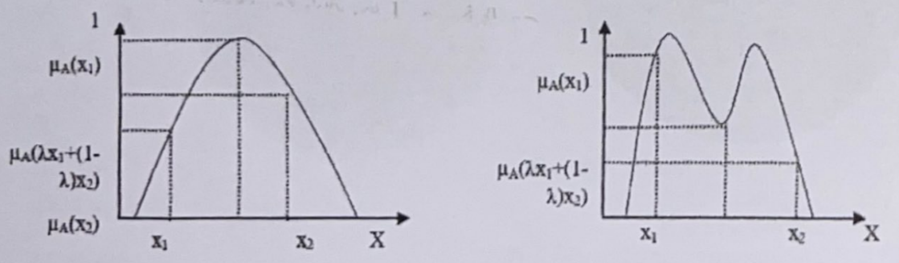
The Linguistic Variable
Fuzzy logic computes using everyday words instead of exact numbers to mimic human reasoning.
- Universe of discourse (L'univers du discours): The complete range of possible values for a given variable.
- Linguistic values (Valeurs linguistiques): The descriptive words used for different parts of that range (e.g., "cold" or "young").
- Membership function (Fonction d'appartenance): The mathematical shapes used to map these words to numbers (Triangular, Gaussian, Trapezoidal).
Triangular Function
Concept: The triangular membership function is the simplest and most common. It uses three points to form a triangle: a starting point (degree 0), a peak point (degree 1), and an ending point (degree 0).
$$ \mu(x) = \begin{cases} 0 & x \le a \\ \frac{x - a}{b - a} & a < x \le b \\ \frac{c - x}{c - b} & b < x \le c \\ 0 & x > c \end{cases} $$
Step-by-step Calculation:
- If $x \le a$ or $x \ge c$, the membership degree is 0.
- If $x = b$, the degree is 1.
- If $a < x < b$, calculate the upward slope: $(x - a) / (b - a)$.
- If $b < x < c$, calculate the downward slope: $(c - x) / (c - b)$.
Trapezoidal Function
Concept: The trapezoidal function is similar to the triangular one, but instead of a single peak point, it has a flat top where the membership degree remains 1 over an interval.
$$ \mu(x) = \begin{cases} 0 & x \le a \\ \frac{x - a}{b - a} & a < x \le b \\ 1 & b < x \le c \\ \frac{d - x}{d - c} & c < x \le d \\ 0 & x > d \end{cases} $$
Step-by-step Calculation:
- If $x \le a$ or $x \ge d$, the membership degree is 0.
- If $b \le x \le c$, the degree is 1.
- If $a < x < b$, calculate the upward slope: $(x - a) / (b - a)$.
- If $c < x < d$, calculate the downward slope: $(d - x) / (d - c)$.
Gaussian Function
Concept: The Gaussian function creates a smooth, bell-shaped curve. It is infinitely wide but approaches zero as it gets further from the center. It is defined by its center and its width.
$$ \mu(x) = e^{-\frac{(x - c)^2}{2\sigma^2}} $$
Step-by-step Calculation:
- Calculate the squared distance from center: $(x - c)^2$.
- Divide by the spread factor: $(x - c)^2 / (2\sigma^2)$.
- Calculate the final degree: $e^{-((x - c)^2 / 2\sigma^2)}$.
Sigmoid Function
Concept: The sigmoid function provides a smooth transition from 0 to 1 (or 1 to 0). It is often used for concepts like "very large" or "very small" where the membership degree stays at 1 after a certain point.
$$ \mu(x) = \frac{1}{1 + e^{-a(x - c)}} $$
Step-by-step Calculation:
- Calculate the distance multiplied by slope: $-a(x - c)$.
- Apply the exponential function: $e^{-a(x - c)}$.
- Calculate the final degree: $1 / (1 + e^{-a(x - c)})$.
Fuzzy Logic Operators (Zadeh's Formalism)
When combining fuzzy sets, we use specific mathematical rules:
- Logical AND (ET logique): Represents the intersection by taking the smallest value: $\min(a, b)$.
- Logical OR (OU logique): Represents the union by taking the largest value: $\max(a, b)$.
- Logical NOT (NON logique): Represents the opposite (le complément), calculated as $1 - a$.
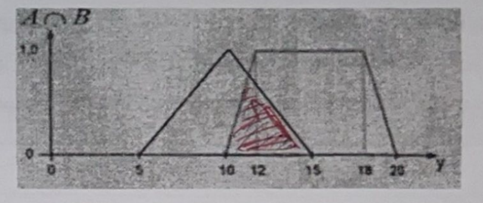
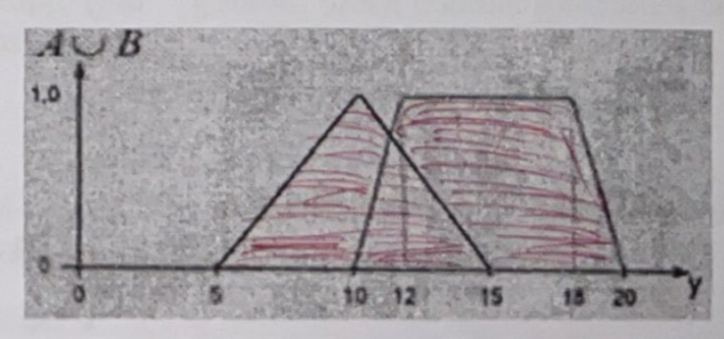
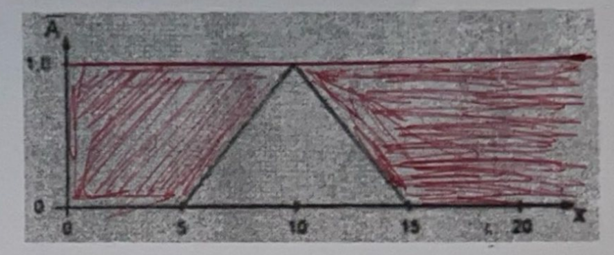
II. Inference Systems
1. Classic Inference Systems
These systems use strict Boolean logic (0=False, 1=True) to deduce conclusions.
- Knowledge Base (Base de connaissances): Comprises the Database (known facts) and the Rule Base (IF-THEN rules).
- Inference Engine (Moteur d'inférence): Searches for and applies rules to data.
- Methods: Forward Chaining (Facts → Conclusion) and Backward Chaining (Goal → Facts).
- Pros & Cons: Simple, fast, but cannot handle uncertainty and has abrupt boundaries.

2. Fuzzy Inference Systems (FIS)
Handle uncertainty by using linguistic variables instead of strict 0s and 1s. Formally defined by (X, Y, F, R, M).
- Fuzzification: Converting a precise number into a membership degree.
- Inference: Applying linguistic rules (e.g., "IF Temp is Cold THEN Fan is Slow").
- Defuzzification: Converting the final fuzzy result back into a precise number.

3. Fuzzy Inference Models
- Mamdani Model (Le modèle Mamdani): The conclusion of each rule is a fuzzy set. Defuzzification uses the weighted average of the centers:
$$ z = \frac{\sum (w_i \cdot C_i)}{\sum w_i} $$($w_i$ = rule activation degree, $C_i$ = center of output triangle).
- Sugeno Model (Le modèle Sugeno): The conclusion is a strict mathematical function, great for optimization.
$$ z = \frac{\sum (w_i \cdot z_i)}{\sum w_i} $$
- Tsukamoto Model (Modèle Tsukamoto): Output sets must be strictly monotonic. Output is calculated using specific values on the curve.
III. Fuzzy Clustering
Review: Classic / Hard Clustering
Data points belong to exactly one cluster. $u_{ij} \in \{0, 1\}$.
Limitations: Forces abrupt assignments, causes information loss, and is sensitive to noise.
Mathematical Formalism
A single data point can belong to multiple clusters at the same time based on a membership degree.
- Constraints:
$$ 0 \leq u_{ij} \leq 1 \quad \text{and} \quad \sum_{j=1}^{c} u_{ij} = 1 $$
- FCM Objective Function:
$$ J_m = \sum_{i=1}^{n}\sum_{j=1}^{c} u_{ij}^m ||x_i - c_j||^2 $$Where $m$ is the fuzziness coefficient.
FCM Algorithm Steps
- Initialize membership matrix $U$.
- Calculate Centers:
$$ c_j = \frac{\sum_{i=1}^{n} u_{ij}^m x_i}{\sum_{i=1}^{n} u_{ij}^m} $$
- Update Memberships:
$$ u_{ij} = \frac{1}{\sum_{k=1}^{c} \left( \frac{||x_i - c_j||}{||x_i - c_k||} \right)^{\frac{2}{m-1}}} $$
- Repeat until convergence (difference $< \epsilon$).
FCM Python Implementation
import numpy as np
# --- 1. DATA INITIALIZATION ---
X = np.array([1, 2, 5, 8], dtype=float)
n = len(X)
c = 2 # Number of clusters
m = 2 # Fuzziness parameter
epsilon = 0.1 # Stopping criteria
max_iter = 100
# Initial membership matrix
U = np.array([
[0.8, 0.2],
[0.7, 0.3],
[0.3, 0.7],
[0.2, 0.8]
], dtype=float)
# --- 2. MATH FUNCTIONS ---
def calcul_centres(X, U, m):
um = U ** m
# Weighted average
centres = (um.T @ X) / np.sum(um.T, axis=1)
return centres
def update_U(X, centres, m):
n, c = len(X), len(centres)
U_new = np.zeros((n, c))
for i in range(n):
for j in range(c):
somme = 0
for k in range(c):
d1 = abs(X[i] - centres[j])
d2 = abs(X[i] - centres[k])
if d2 == 0:
d2 = 1e-6
somme += (d1 / d2) ** (2 / (m - 1))
U_new[i, j] = 1 / somme
return U_new
# --- 3. ALGORITHM LOOP ---
iteration = 0
while iteration < max_iter:
iteration += 1
centres = calcul_centres(X, U, m)
U_new = update_U(X, centres, m)
if np.linalg.norm(U_new - U) < epsilon:
break
U = U_newIV. Adaptive Neuro-Fuzzy Inference System (ANFIS)
Why ANFIS?
Standard Neural Networks (ANN) are powerful but act as a "black box" that cannot explain decisions. Standard Fuzzy Logic is interpretable but requires manual rule creation. ANFIS combines both: it learns parameters automatically from data while generating clear, interpretable IF-THEN rules.
Architecture (The 5 Layers)
- Layer 1 (Fuzzification): Calculates membership degree.
- Layer 2 (Rule Activation): Multiplies inputs to find the activation strength of the rule.
- Layer 3 (Normalization): Calculates the relative weight of the rule.
- Layer 4 (Rule Output): Applies the mathematical Sugeno function.
- Layer 5 (Final Output): Calculates final global output (Defuzzification).
Comparison & Applications
ANN vs ANFIS: ANN says "I predict, but I cannot explain", whereas ANFIS says "I predict AND I explain using rules".
Pros & Cons: Highly precise and explainable, but computationally expensive and sensitive to data.
Example (Credit Risk): "IF income is low AND debt is high THEN credit = refused". Used in finance, medical diagnosis, smart grids, robotics, and XAI.
V. Fuzzy Quantifiers
Why use them?
Why use them? (Pourquoi les utiliser ?) Classic rules (like "IF CPU is high") are too rigid and lack explanation. Quantifiers (like "IF most indicators are high") make the rules much more natural, flexible, and interpretable.
Formal Definition (Définition formelle): A fuzzy quantifier is a mathematical function that takes a satisfied proportion ($p$) and converts it into a degree of truth ($Q(p)$).
Mathematical Example
To calculate the exact degree of truth for the word "most" (la plupart), we use this function:
Interpretation: If less than 50% of conditions are met, "most" is 0% true. Once you pass 50%, the truth degree scales up progressively until it hits 100% truth at $p=1$.
Types of Fuzzy Quantifiers
- Monotonic (Quantificateurs monotones): Functions that only go in one direction (strictly increasing like "a lot" or strictly decreasing like "few"). Logically coherent, but cannot cover specific target concepts.
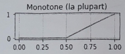
- Non-monotonic (Quantificateurs non monotones): Functions centered on a specific target value, using triangular or Gaussian shapes (e.g., "about 5"). Great for precise concepts.
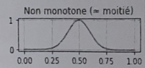
- Regular (Quantificateurs réguliers de Zadeh): These must strictly start at zero and end at exactly one ($Q(0)=0$ and $Q(1)=1$). Examples: "most", "a lot".
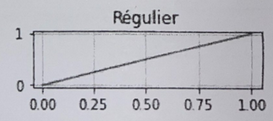
- Non-regular (Quantificateurs non réguliers): Do not respect Zadeh's strict boundaries. Flexible for real-world situations.
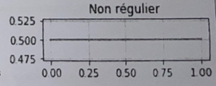
- Linguistic (Quantificateurs linguistiques flous): Natural language expressions modeled directly by fuzzy functions. Extremely natural but highly subjective.
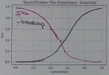
VI. Fuzzy Decision Trees
1. Introduction & Review (Classic Trees)
- Classic Trees: Supervised learning models making hierarchical decisions via rules. They consist of a root node, branches, and leaves, where each node applies a strict, precise binary test (e.g., Age > 30).
Age > 30 ? / \ Yes No / \ High Income? Refuse / \ Yes No Accept Refuse - Fuzzy Decision Trees: Extend classic trees using fuzzy logic to handle uncertainty and imprecision. A single data point can belong partially to multiple classes.
- Construction of a Classic Tree: Uses algorithms like ID3, C4.5, and CART to find the best attributes to separate the data based on calculation criteria:
- Entropy: Calculates uncertainty: $H(S) = - \sum_{i=1}^{n} p_i \log_2(p_i)$
- Information Gain: Calculates the reduction in uncertainty to pick the best attribute: $Gain(S,A) = H(S) - \sum_{v \in Values(A)} ( \frac{|S_v|}{|S|} ) H(S_v)$
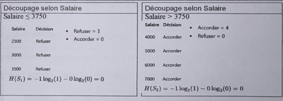
2. Why Use a Fuzzy Decision Tree?
Classic trees have several limitations:
- Strict Boundaries: Rigid cutoffs are not realistic (e.g., a tiny change leads to opposite decisions).
- No Linguistic Terms: They manipulate exact numbers instead of human concepts like "low salary".
- Poor Uncertainty Handling: Highly unstable to small data variations.
- Rule Explosion & Overfitting: Deep trees memorize training data but fail on new clients.
The Fuzzy Solution: Fuzzy trees replace strict bounds with membership degrees, making decisions progressive instead of binary.
3. Construction of a Fuzzy Decision Tree
The goal is to build the tree using fuzzy membership degrees, calculate fuzzy entropies, and generate fuzzy rules.
- Fuzzy Sets: Instead of a strict boundary, variables are divided into fuzzy sets like "Low", "Medium", and "High".
- Fuzzy Entropy: Similar to classic entropy, but uses fuzzy probabilities. To find the probability, you sum the membership degrees for each class instead of counting whole units.
4. Rule Generation
- Fuzzy Weights: The weight of each fuzzy branch is calculated by summing the membership degrees.
- Fuzzy Information Gain: Determines which attribute to place at the top of the tree.
Salary / | \ Low Medium High | | | Refuse Mixed Accept - Rule Generation Principle: A rule is created by taking the fuzzified values, selecting the dominant class, and translating the path into natural linguistic terms.
Rule 1: IF Salary is Low AND Debt is High THEN Decision = Refuse
Rule 2: IF Salary is Medium AND Age is Young AND Debt is Medium THEN Decision = Accept
Rule 3: IF Salary is High AND Age is Medium AND Debt is Low THEN Decision = Accept
5. Conclusion
- Main Advantages: Better uncertainty management, progressive decisions, greater robustness, and rules that map closely to natural human reasoning.
- Applications: Expert systems, finance, medicine, and general decision support.